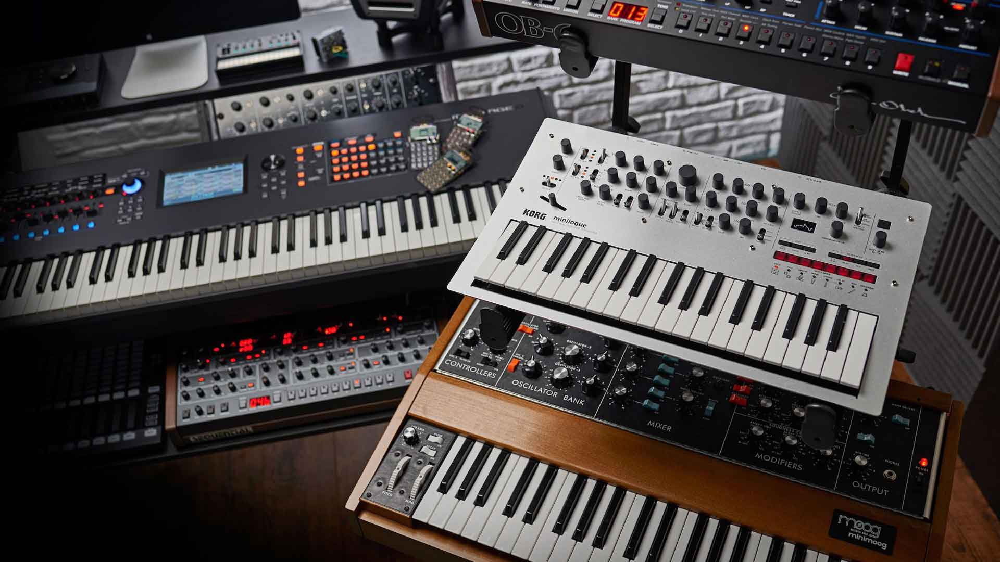
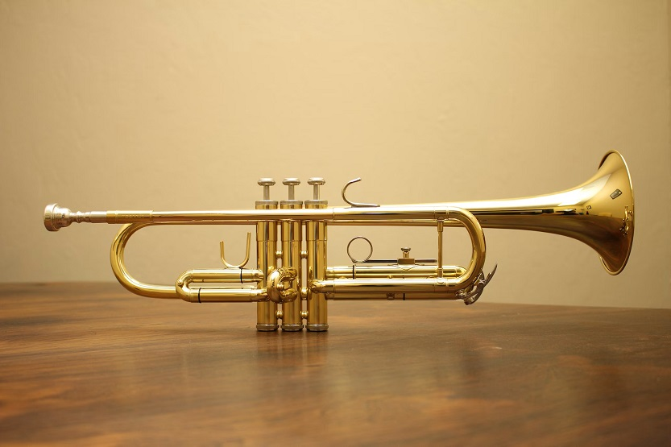

Guitarra eléctrica
Fundamental en casi todos los subgéneros del rock, utilizada para riffs y solos.

Bajo eléctrico
Proporciona la línea de bajo y ritmo, complementando a la guitarra y la batería.

Batería
Elemento clave para el ritmo y la energía de la música rock.

Teclados/Sintetizadores
Usados en muchas bandas de rock, añaden texturas y melodías.
saxofón
Aunque originalmente se concibió como un instrumento clásico y militar, desde entonces se ha abierto camino en casi todos los géneros musicales del mundo, desde el pop y el rock hasta el jazz, la música clásica y la vanguardia .

Trompeta
Es un instrumento versátil que puede tocar melodías, arreglos armónicos y también puede realizar técnicas extendidas.